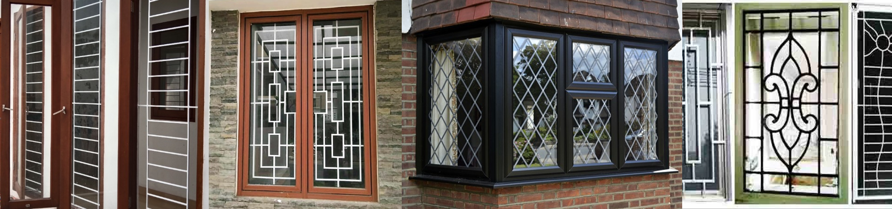

Tentang Kami

Komitmen Kami Terhadap Kualitas.
Bengkel Las Listrik Wijaya hadir dengan komitmen yang kuat terhadap kualitas dalam setiap pengerjaan. Kami
mengutamakan kepuasan pelanggan dengan menyediakan layanan las listrik berkualitas tinggi yang memenuhi
standar keamanan dan kehandalan. Dengan pengalaman bertahun-tahun dan tim ahli yang berdedikasi, kami siap
memberikan solusi las listrik yang tepat untuk kebutuhan Anda.
Inovasi dan Teknologi Terkini
Di Bengkel Las Listrik Wijaya, kami selalu mengikuti perkembangan teknologi terbaru dalam bidang las listrik.
Kami memanfaatkan peralatan dan metode kerja terkini untuk memberikan hasil yang optimal dan efisien. Dengan
pendekatan inovatif, kami terus berusaha memberikan solusi yang lebih baik dan lebih canggih kepada pelanggan
kami.
Pelayanan Ramah dan Profesional
Kami mengutamakan pelayanan yang ramah, cepat, dan profesional kepada setiap pelanggan. Dari konsultasi awal
hingga penyelesaian proyek, tim kami selalu siap membantu dan memberikan informasi yang dibutuhkan. Kejujuran,
integritas, dan transparansi adalah prinsip yang kami pegang teguh dalam setiap interaksi dengan pelanggan
kami. Bersama Bengkel Las Listrik Wijaya, Anda dapat mengandalkan layanan yang terpercaya dan berkualitas.
Lokasi

Kami Berlokasi Strategis di Daerah Ciawi, Bogor.
Bengkel Las Listrik Wijaya berada di lokasi yang strategis di daerah Ciawi, Bogor, yang mudah diakses oleh
pelanggan dari berbagai wilayah sekitarnya. Dengan lokasi yang terletak di jalur utama, kami memberikan
kemudahan bagi pelanggan dalam mengunjungi bengkel kami untuk mendapatkan layanan las listrik berkualitas
tinggi. Selain itu, lingkungan yang nyaman dan fasilitas yang memadai membuat pengalaman pelanggan kami
menjadi lebih menyenangkan dan efisien.
Etalase
Kami memiliki beberapa jenis produk yang dapat dibuat.
Pagar

Kami memiliki beberapa contoh gambar design dari pagar yang pernah kami buat sebelumnya.
Anda dapat memilih design pagar seperti apa yang anda sukai dan mendiskusikannya dengan kami.
Jika anda punya design sendiri, maka jangan ragu untuk menunjukkannya pada kami karena kami juga
menerima design yang sesuai dengan keinginan client.
Kanopi

Tidak hanya pagar, kami juga dapat membuat kanopi dan di atas merupakan beberapa contoh design
kanopi yang sudah pernah kami buat sebelumnya. Anda dapat memilih dari design yang sudah ada atau
dapat memperlihatkan design kanopi yang anda inginkan. Kami akan buat sesuai dengan keinginan anda.
Tralis

Selain pagar dan kanopi, tentu produk kami yang lainnya adalah tralis. Di atas merupakan beberapa gambar
tralis
yang sudah pernah kami buat sebelumnya. Anda dapat memilih dari design yang sudah ada atau
dapat memperlihatkan design tralis yang anda inginkan. Kami akan buat sesuai dengan keinginan anda.
Beberapa Review Pelanggan Kami

Suryadi
Mantap, sangat sesuai dengan yang saya mau pesanannya.

Cahyadi
Saya akan pesan lagi sepertinya.

Sumardi
Saya akan rekomendasikan kepada teman teman saya.
Hubungi Kami
Jika berminat, anda dapat menghubungi kami melalui:
Telepon : 0251 1234 5678
Whatsapp : +623456789012
Email : wijayalas@gmail.com
Alamat : Jl. HE Sukma Km. 2 Gg. Kusen RT 01 RW 02 Ciawi, Bogor